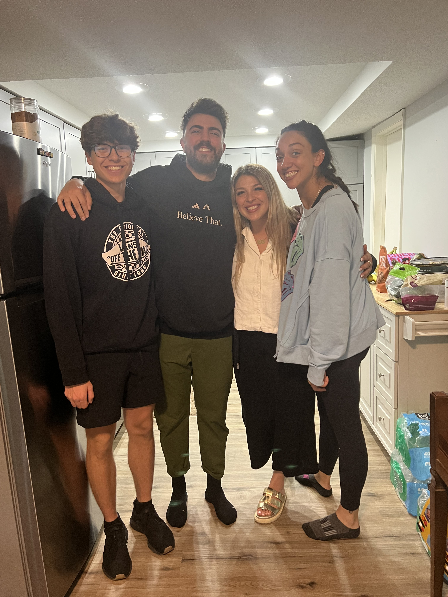

Hello! My name is Elias Alamat. I am a Computer Science student at the University of San Diego with a strong interest in software engineering, cybersecurity, backend systems, and object-oriented design. I am on track to graduate early and plan to complete my master’s degree in Cybersecurity Engineering in 2028.
I enjoy building practical software projects that solve real problems, especially systems involving Java, backend architecture, APIs, design patterns, testing, and user-centered tools. I am actively seeking internship or early-career opportunities where I can continue growing as a developer and contribute to meaningful projects.
Designed and implemented a multi-role restaurant point-of-sale system using Java and object-oriented design.
The system supports staff login, server and chef roles, order creation, kitchen ticket tracking, payment processing, inventory income tracking, and a terminal-based demo flow.
Applied SOLID principles, defensive copying, the Strategy Pattern for payments, and the Abstract Factory Pattern for menu item creation.
Technologies: Java, JavaFX, Gradle, JUnit, Git
Developed a Chrome extension that helps students track Canvas assignments and receive email reminders.
The project was inspired by the problem of assignments being hidden across multiple Canvas tabs.
Published as a Chrome extension with over 100 downloads and growing.
Technologies: JavaScript, HTML, CSS, Chrome Extension APIs
Built a Java simulation that models multiple elevator types within a building, including standard, express, penthouse, and freight elevators.
Used object-oriented design, abstraction, inheritance, interfaces, scheduling logic, and JUnit testing.
The project was designed around SOLID principles and maintainable software architecture.
Technologies: Java, JUnit, IntelliJ IDEA, Git
Created a Java simulation to experimentally test the Birthday Paradox.
The program runs randomized trials and confirms that the probability of two people sharing a birthday becomes greater than 50% around 23 people.
Technologies: Java, IntelliJ IDEA
email address